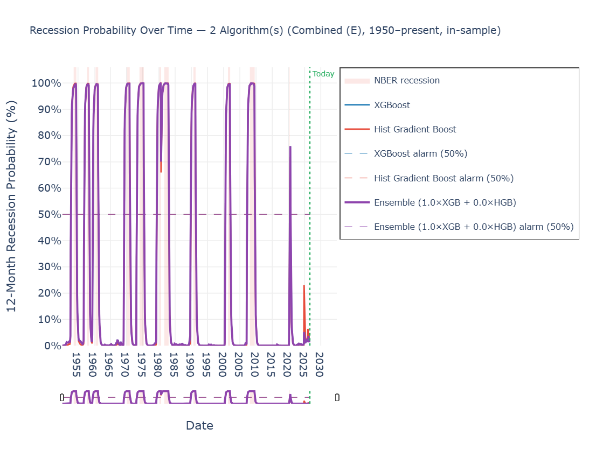
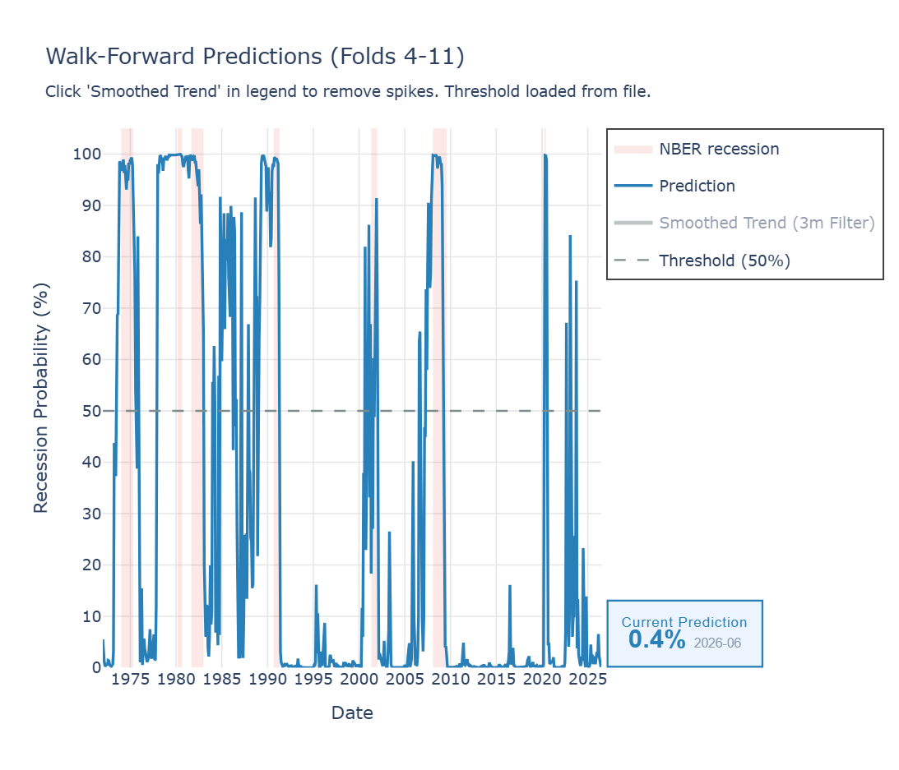
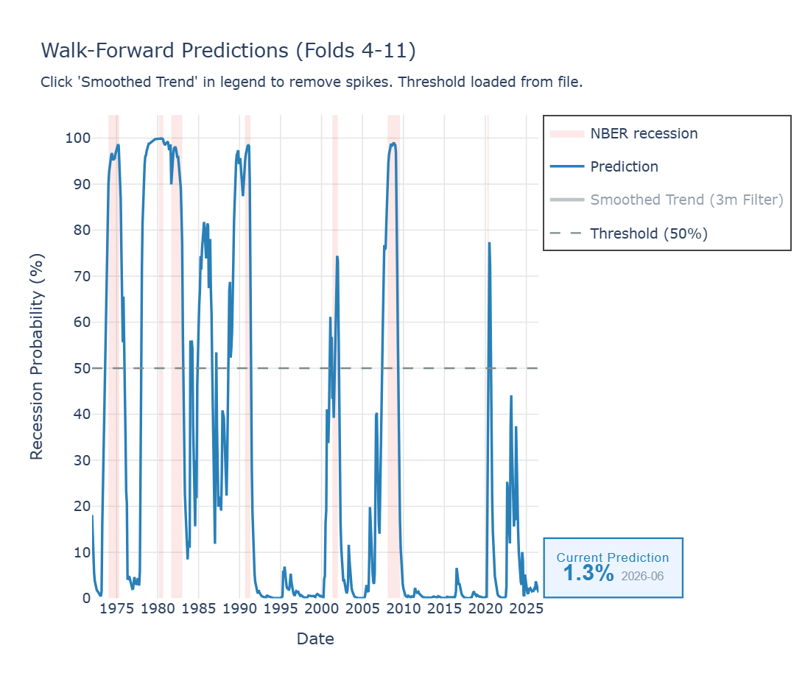
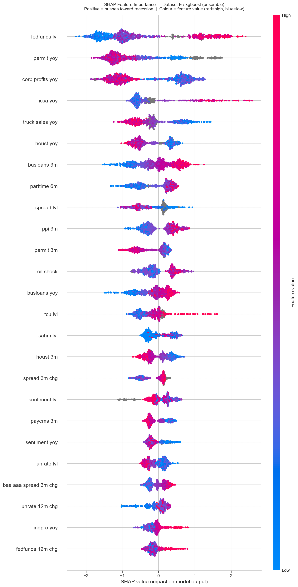
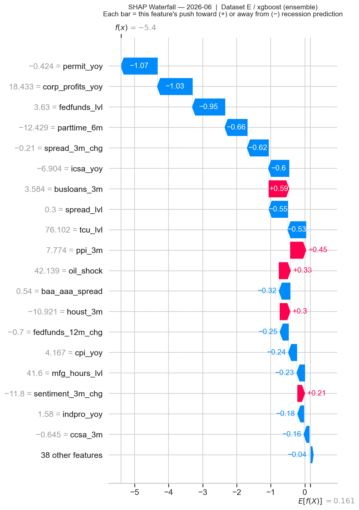
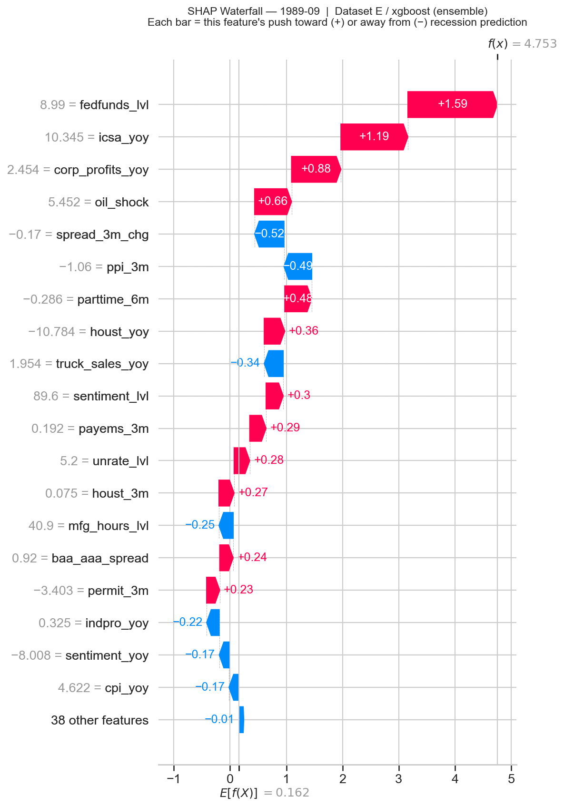
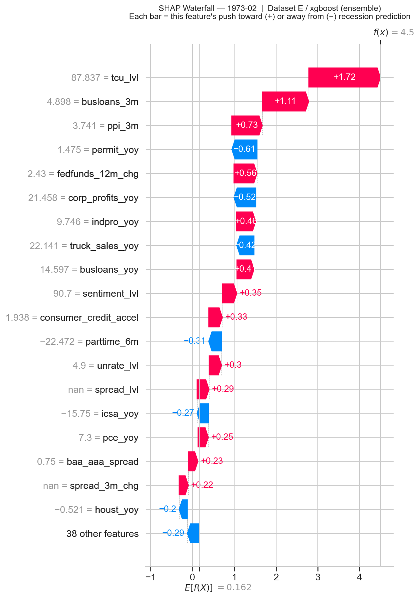
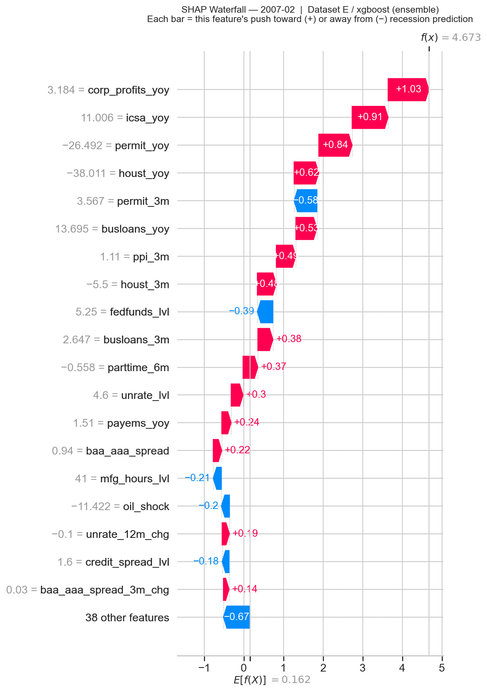
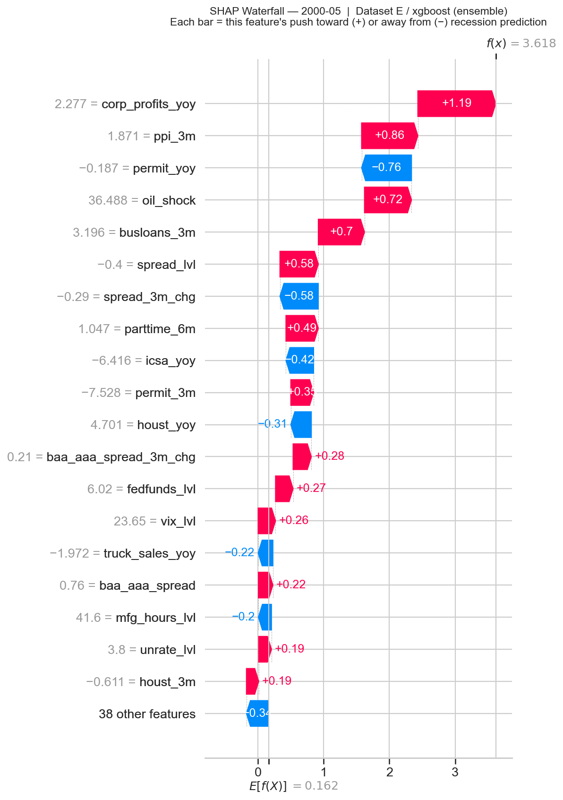
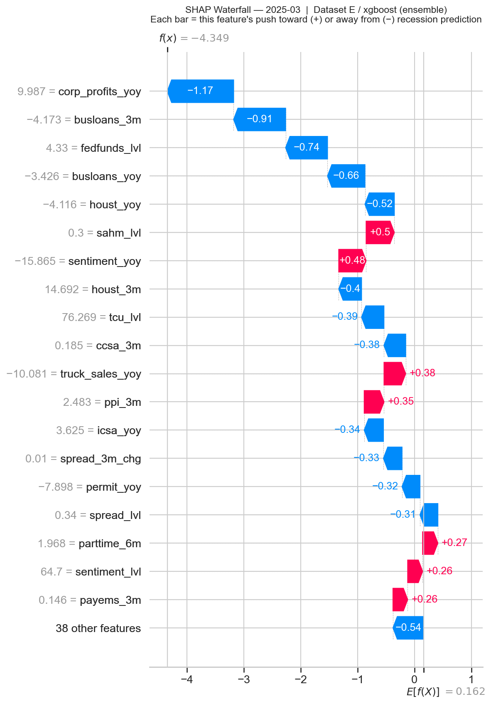

Final-model recession probability, 1950 – present (in-sample fit, XGBoost ensemble). NBER recession windows shaded in pink. The model tracks every post-war recession and remains suppressed during the 2011 European debt crisis, the 2015–16 China slowdown, and the 2022–23 rate-hike cycle.
Note: This historical timeline illustrates the breadth of the training data. Historical spikes represent the model's in-sample fit to events it has already observed; true out-of-sample prediction is restricted to the walk-forward folds (Fig. 2–3).
fig-full-history.png · combined ensemble (E), 1950 – present, in-sample, EMA-filtered
01Introduction
The hardest easy problem in applied ML.
Recession forecasting occupies an unusual position in applied machine learning. The prediction target is rare — roughly 11% of post-war months fall within an NBER-defined recession window — its definition is retroactive, and the asymmetric cost of errors is severe. A false alarm is not merely an incorrect prediction; it is a credibility-destroying event that may cause the next genuine signal to be ignored.
Three structural challenges compound the difficulty:
- Label scarcity. The United States has experienced approximately 11 NBER-defined recessions since 1950 — fewer than 130 positive-class samples across 75 years of monthly data. A dataset size that would be considered trivially small in most ML contexts.
- Retroactive definition. The NBER typically announces recession start dates six to twelve months after the fact. Recent training labels are therefore provisional and subject to revision; models trained on the most current data are learning from unresolved ground truth.
- Forward contamination. A 12-month forward label means a sample from early 2019 carries a recession label of 1 simply because COVID arrived in Q1 2020 — not because of any cyclically learnable pattern in 2019. Without an explicit architectural response, the model learns spurious associations.
The objective was not to build the most complex forecasting system, but a credible one — one that catches every major recession with meaningful advance warning, while maintaining a false-alarm rate low enough to preserve operational utility over time. — Project thesis
02Data & Features
From forty-seven raw FRED series to fifty-seven engineered features.
All data are sourced from FRED, the St. Louis Federal Reserve's public macroeconomic database. Forty-seven raw series are fetched via API, cached locally, and aligned to month-end frequency before feature engineering begins.
Transformation philosophy
Raw series are never used directly as model inputs. Every feature is derived as one or more of: absolute level, year-over-year percentage change, 3-month percentage change, 12-month absolute change, or a binary threshold flag. This layer normalizes units across heterogeneous series and extracts the rate-of-change signals that lead the underlying levels.
Where a series begins after 1950 — VIX before 1990, JOLTS before 2000 — the corresponding features are left as proper missing values. No imputation is applied. The production model handles structural missingness natively, learning to weight features relative to their actual historical availability.
Feature groups (Dataset E, plus configuration)
Table 1 — Production feature inventory · 57 features across 8 active domains
| Group | Features | Available from |
|---|---|---|
| Core macro & labor | 9 | 1939 |
| Inflation & prices | 5 | 1913 |
| Housing & consumption | 11 | 1950 |
| Yield curve & central bank | 5 | 1953 |
| Credit & corporate stress | 10 | 1919 |
| Market volatility & leading indicators | 14 | 1967 |
| Bank lending standards (SLOOS) | 1 | 1990 |
| CapEx intent | 2 | 1992 |
| Total | 57 | — 1950 floor |
A further 29 features are available under --feature-set full but were excluded from production after seeing a drop in performance when used
Class imbalance
With roughly 11% recession-month prevalence, the dataset is severely imbalanced. Synthetic oversampling (SMOTE) is explicitly rejected: generating artificial recession months would corrupt the temporal structure of the data and produce training observations that violate chronological ordering. Instead, XGBoost's native gradient penalty ensures the optimizer accounts for the true class frequency without fabricating history.
03Architecture
Five views of the macroeconomy. One production model.
Rather than constructing a single feature matrix, the system organizes indicators into five dataset views, each representing a distinct analytical perspective. Datasets A–D were discarded due to weak signal quality. Dataset E is the production choice — it maximizes historical depth, covers the broadest feature space, and relies on XGBoost's native NaN handling to organically weight each feature based on its historical availability.
Table 2 — Dataset views
| View | Start | Features | Perspective |
|---|---|---|---|
| A | 1960 | 9 | Classic cycle: unemployment, industrial production |
| B | 1977 | 19 | Modern macro: yield curve, housing, sentiment |
| C | 1950 | 11 | Long history: payrolls, CPI, manufacturing hours |
| D | 1991 | 10 | Financial stress: credit spreads, VIX, jobless claims |
| E | 1950 | 57 | Production — full union plus CapEx and SLOOS |
Production pipeline
# Monthly inference run — current month excluded
FRED API (47 series)
│
▼
Feature engineering → 57 features, NaN-native
│
▼
Walk-forward (12-month fold embargo)
├── EMA signal mode (production)
└── raw signal mode (reference)
│
▼
SHAP analysis → global summary + monthly waterfall
│
▼
History charts → full-history + per-fold evolution
│
▼
Run log → output/production/runs.csv · one row per month
Why XGBoost
Ten algorithms were evaluated — XGBoost, HistGradientBoosting, Logistic Regression, Random Forest, Gradient Boosting, AdaBoost, Extra Trees, SVC, MLP, Naive Bayes — on AUC across walk-forward folds and false-positive rate at the calibrated threshold. XGBoost dominated on both criteria across all datasets and time periods. It was selected as the sole production model for three reasons:
- Native handling of structural missingness without imputation.
- Performance – It was the only model to consistently generate robust and reliable predictions across all evaluation windows.
- SHAP decomposability allows feature-level attribution at every monthly inference.

Fig. 1
Full history
Full history
04Methodology
The mechanisms that enforce temporal honesty.
4.1 — Walk-forward validation
Standard k-fold cross-validation is inappropriate for time-series macro data: training on post-2005 data to predict pre-2000 outcomes leaks future distributional information into the past. Walk-forward validation enforces a strict chronological constraint — each fold trains on all data up to a fixed cutoff and evaluates on all subsequent data. Cutoffs are placed immediately after the resolution of one historical recession, producing 11 folds covering the full record. Each fold accumulates one additional recession episode in its training data, simulating the progressive accumulation of evidence that occurs in real-time deployment.
The 12-month fold embargo (v2.1).
A training row dated m carries a label built from months m+1 … m+12, so the labels of the final 12 months before each fold's cutoff encode test-window information — fold 6's July 1981 row, for example, is labeled positive only because the August 1981 test recession begins one month later. v2.1 drops those rows from every fold's training slice and starts each test window strictly after the cutoff (previously the boundary month appeared in both sets). Re-measured under this stricter protocol, the headline results are essentially unchanged — average mature-fold AUC 0.959 → 0.955, average advance warning 13.2 → 13.6 months — evidence that the reported performance was not riding on boundary leakage. This mirrors, inside the validation harness, the same reasoning behind the T−24 production cutoff.
4.2 — Structural safety mechanisms
The 24-month training blind spot.
Every model is trained only on data older than 24 months from the current date. NBER recession dates are revised; the forward label for recent months is structurally uncertain. Excluding the most recent 24 months eliminates a category of silent label leakage at the cost of some recency — a deliberate, conservative tradeoff.
COVID censoring.
The period February 2019 through December 2020 is physically removed from the training matrix. Samples from early 2019 carry a recession label of 1 because COVID struck in Q1 2020, not because of any learnable cyclical deterioration. The 2020 recession was an exogenous biological shock; no business-cycle model should train on it. This window is also excluded from false-positive counting during walk-forward evaluation.
Although some underlying economic deterioration was present, the 2020 crash was caused by an exogenous biological shock. Retaining this period would cause the model to falsely associate cyclical macroeconomic weakness with pandemic-level anomalies, artificially increasing false positive rates in standard business cycles.
Native imbalance handling.
XGBoost's native gradient penalty replaces synthetic oversampling, preserving the temporal integrity of the training data.
Forward-fill with cap.
FRED series are published asynchronously. When the most recent release for an indicator is unavailable, the system carries the last known value forward, capped at two months. This prevents pipeline failure from incomplete current data without admitting observations that are more than two months stale.
Publication-lag alignment (v2).
FRED series are stamped with their reference period, not their release date. March CPI carries a March 31 timestamp but is not published until mid-April; Q4 corporate profits carries a December 31 timestamp but is not released until late January. v1 indexed every series at its reference-period end, which silently exposed the model to data 1–3 months before it would have been observable in real-time deployment. v2 shifts series forward to reflect their actual publication lag: monthly series by two months, quarterly series by four. This eliminates a category of look-ahead leakage that was particularly acute for the quarterly indicators (SLOOS bank tightening, corporate profits) that the model relies on for the early stages of a contraction.
Strict prediction anchor (v2).
FRED quarterly series can extend the feature index past the current month — corporate profits, for instance, often publishes a forward-dated month-end stamp. v1's anchor logic only skipped the exact current month, which silently allowed future-dated rows to surface as the “current” inference under specific calendar conditions. v2 enforces a strict filter to the last complete month strictly before today, eliminating an entire class of forward-bias that could quietly contaminate the production probability.
4.3 — The EMA signal filter
Raw probability output from any macro model contains noise. A single month above the alarm threshold does not constitute a reliable signal; isolated spikes are common during mid-cycle slowdowns and rate-hike episodes that do not resolve into recessions. v2 uses an exponential moving average as the production filter — at each month, the filtered value is a weighted blend of the new raw probability and the prior filtered value, with the weight (α = 0.35) tuned so that roughly three sustained months of elevated raw probability are needed to cross the 50% alarm threshold.
The EMA is path-aware: a gradual 40→50% build-up over several months accumulates into the filtered series faster than a single-month spike that was at 0% the prior month. A sustained high signal crosses the alarm threshold sooner than a fixed-window confirmed filter would allow; an isolated spike, however large, decays before it can.
Why EMA replaces the prior confirmed filter
v1 used a confirmed-signal filter requiring N consecutive months above threshold before activating. It was robust but had two structural weaknesses: it was path-blind (a gradual 4-month build-up was treated identically to an isolated spike preceded by zeros), and it imposed a fixed activation delay regardless of signal strength.
The EMA filter resolves both. In benchmark testing on mature folds (4–11), it preserves the near-zero false-alarm profile while recovering the 2001 Dot-Com recession that the confirmed filter missed entirely — the latter's required streak kept breaking against the noisier 2001 build-up.
Unlike a purely threshold-based post-filter, the EMA directly affects the AUC reported in walk-forward validation. AUC is computed on the EMA-smoothed probability series, not the raw model output; smoothing reduces month-to-month noise and produces a more stable ranking of pre-recession months vs. normal months, which raises AUC. This is the intended behavior — the EMA represents the operational signal the system produces, and AUC should reflect the quality of that signal.
Hysteresis emerges implicitly from the smoothing: a brief dip during a sustained high-EMA period cannot instantly reset the alarm, because the EMA carries prior history forward. No explicit Schmitt-trigger deactivation threshold is required — the integrator is itself the memory.
4.4 — Threshold calibration
A model outputs a probability; an alarm requires a threshold. The production threshold is fixed at 50% — selected by sweeping candidate levels over the OOS predictions from mature folds for the value that minimized dangerous false-positive streaks (sustained above-threshold EMA signals not followed by an NBER recession within 12 months) while preserving maximum recession coverage. The natural center of the probability scale satisfied both criteria, with a clean interpretation: the alarm fires when the model has genuine, balanced-evidence conviction rather than marginal elevation.
4.5 — Feature validation via Monte Carlo ablation
Before finalizing the production feature set, 25 candidate features across six domains were evaluated using a Monte Carlo ablation procedure. In each of 1,790 iterations, a random subset of candidates was added to the baseline matrix and the impact on AUC and false-positive rate was measured. Every candidate either degraded AUC, increased false-positive rate, or both. The dominant failure mode was multicollinearity: many candidates were overlapping proxies for the same underlying phenomenon, diluting signal without providing orthogonal information.
Three features — showed marginal positive signal in isolation and were retained in the plus configuration after individual walk-forward confirmation.

Fig. 2
Raw signal
Raw signal
Walk-forward predictions, folds 4–11, before any filtering. Mid-cycle false-positive spikes are visible — short-duration exceedances during episodes that did not resolve into recessions, plus the noisy 1980s post-Volcker oscillation.
plot history-folds · dataset E · ensemble (1, 0) · feature-set plus · raw

Fig. 3
EMA-filtered
EMA-filtered
The same folds after the EMA filter (α = 0.35). Short-duration exceedances are suppressed; structural alarm periods (1973, 1980, 1981, 1990, 2001, 2007) remain. The 2001 build-up now crosses threshold approximately 3 months ahead of the recession start — the principal v1 limitation removed.
plot history-folds · dataset E · ensemble (1, 0) · feature-set plus · --ema
05Results
Walk-forward performance, fold by fold.
The table below reports performance across the strictly out-of-sample mature folds (4–11), re-measured in v2.1 under the 12-month fold embargo (§4.1). Folds 1–3 are excluded from summary averages: they contain very limited recession history (one to three episodes, from as few as 40 training months). AUC measures discrimination; FP/yr is the rate of dangerous false-positive streaks per year of test data. COVID-2020 is excluded from lead-time and false-positive calculations in all folds.
Table 3 — Out-of-sample walk-forward results · Dataset E · EMA filter (α = 0.35) · 12-month embargo
| Fold | Trained through | Recessions in training | AUC | FP / yr |
|---|---|---|---|---|
| 4 | Nov 1970 | 4 | 0.939 | 0.4 |
| 5 | Mar 1975 | 5 | 0.920 | 0.4 |
| 6 | Jul 1980 | 6 | 0.966 | 0.0 |
| 7 | Nov 1982 | 7 | 0.943 | 0.2 |
| 8 | Mar 1991 | 8 | 0.972 | 0.1 |
| 9 | Nov 2001 | 9 | 0.990 | 0.0 |
| 10 | Jun 2009 | 10 | n/a † | 0.1 |
| 11 | Apr 2020 | 11 | n/a † | 0.0 |
| Average (mature OOS folds 4–9) | 0.955 | 0.18 | ||
† Folds 10–11 have no completed out-of-sample recession episodes eligible for AUC scoring (COVID-2020 is excluded as exogenous). FP/yr in folds 8–11 averages to 0.05 — the only dangerous streaks in the modern validation record are brief marginal crossings in 2006 and early-to-mid 2023 (1–4 months, peaks 54–69%) plus a two-month tail immediately after the 2001 recession ended.
Average advance warning excluding COVID: 13.6 months. Recession coverage: 6 / 6 mature-fold OOS episodes.
AUC v1 → v2 → v2.1 · where the change comes from
Average mature-fold OOS AUC has improved substantially since v1:
v1 (paper, confirmed filter) → 0.827
+ publication-lag alignment (§4.2) → 0.835 +0.008
+ EMA filter (§4.3) → 0.959 +0.124
+ fold embargo (§4.1, v2.1) → 0.955 −0.004
The EMA filter is the dominant driver of the AUC improvement. AUC is computed on the EMA-smoothed probability series, not the raw model output: smoothing reduces month-to-month noise and produces a more stable ranking of pre-recession months vs. normal months, which directly raises AUC — so this figure should be compared against other smoothed-signal AUCs, not raw-probability benchmarks. The v2.1 embargo, a strictly harder protocol, trims only 0.004: the stability of the result under stricter rules is itself evidence against residual boundary leakage. The model architecture, feature set, and hyperparameters are unchanged from v1.
Three patterns stand out. First, AUC is consistently above 0.90 across all scoreable mature OOS folds and trends upward as recession history accumulates — the fold-9 peak of 0.990 reflects the model benefitting from the full pre-2001 recession record. Second, FP/yr from fold 8 onward is near zero (0.0–0.1): the EMA filter suppresses almost all of the residual short streaks that even the confirmed filter admitted, leaving only the brief 2006 and 2023 crossings noted under Table 3. Third, the 13.6-month average advance warning is measured purely out-of-sample against recession onset — months before any NBER announcement, which itself arrives six to twelve months after the fact.
5.2 — The 2001 recession: v1's lone miss, now caught
In v1, fold 8 (trained through March 1991) assigned only ~35% to the 2001 Dot-Com recession and the confirmed filter never activated. v2 — same model, same training data, EMA filter — crosses threshold approximately 3 months before the March 2001 recession start. The 2001 build-up arrived through several months of mid-50s–mid-60s readings, repeatedly interrupted by lower months that broke the confirmed filter's N-consecutive streak. The EMA accumulates that build-up smoothly instead of resetting on each dip, recovering a weak-but-genuine signal that v1's filter discarded.
The lead time is shorter than other detections in the modern record — 3 months vs. 13+ months at other episodes — for reasons explained in §7.1: the most diagnostic features for a corporate-led, equity-and-CapEx contraction had observed at most one prior recession by the time fold 8 trained. The model could not produce a strong signal, but the signal it did produce is no longer thrown away.
5.3 — The 2022–23 stress test
The 2022–23 period was the most demanding false-positive challenge in the modern dataset. The Federal Reserve raised rates by 525 basis points in 18 months; the 10Y–2Y yield curve inverted to its deepest level since 1981; and market consensus briefly placed recession probability above 70%. Most quantitative macro models — including the univariate yield-curve heuristic — generated sustained false-positive signals.
The production signal registered elevated probability — peaking at ~44% in February 2023 — but never crossed the 50% threshold. The reason is visible in the SHAP decomposition for that period: while monetary-policy features (fedfunds_lvl, spread_lvl) pushed the probability upward, employment indicators (unrate_3m_chg, sahm_lvl) and industrial production (indpro_yoy) remained stable and actively suppressed the signal. The multidimensional feature matrix contextualized the yield-curve inversion within the broader macroeconomic reality; a univariate rule had no such mechanism. For completeness: in the validation harness, the two oldest mature fold models (fold 8, trained through 1991, and fold 10, through 2009) did brush above the line for one to three months in early 2023 (peaks 54–62%) — the marginal crossings reported in Table 3 — while the current-generation fold-11 model and the production model stayed below throughout.
5.4 — Versus the 10Y–2Y yield-curve baseline
The 10Y–2Y Treasury yield-curve inversion is the most widely cited single-variable recession predictor. A naive rule — "alarm when the spread turns negative" — has historically preceded U.S. recessions with reasonable consistency. However, in 2022–23 it generated a sustained false alarm exceeding 26 months. Over the same period, this model's production signal did not activate.
The structural explanation is not that the yield curve is wrong, but that it is context-free. A curve inversion in a full-employment economy with accelerating industrial production is fundamentally different from an inversion accompanied by rising unemployment and tightening credit. A multidimensional model can represent that distinction; a univariate threshold cannot.
06Explainability
Every probability comes with its decomposition.
Because the system operates as an early-warning tool, explaining why the probability is elevated is as operationally important as the probability itself. Every monthly inference is accompanied by a SHAP (SHapley Additive exPlanations) decomposition across three analysis layers.
6.1 — Global feature importance
Ranked by mean absolute SHAP value, the most influential features are consistently the federal funds level (fedfunds_lvl) followed by housing permits (permit_yoy), corporate profits (corp_profits_yoy), and labor and consumer proxies (icsa_yoy, truck_sales_yoy, houst_yoy). This hierarchy was not encoded manually — the model learned it from the data alone. Its alignment with established macro theory (cost of capital leads; the real economy confirms) validates that the model is capturing genuine causal structure rather than spurious correlation.

Fig. 4
SHAP summary
SHAP summary
Mean absolute SHAP contribution across all months, ranked. Monetary-policy (fedfunds_lvl) and housing-permit indicators dominate the top of the ranking, followed by corporate profits and labor-market signals (icsa_yoy) — matching the established lead-lag structure of the U.S. business cycle.
plot shap-summary · dataset E · xgboost · ensemble (1, 0) · feature-set plus
6.2 — Historical timeline
Feature contributions plotted as time series across the full historical record reveal the recession-specific signature of each episode. The 2008 recession shows housing starts and permits contributing sharply from 2006–07, well before the employment data broke. The 1980 and 1981 recessions show federal funds rate and monetary tightening as the dominant driver. The 2001 episode shows corporate credit spreads activating while consumer indicators remained relatively contained — the distinctive fingerprint of an equity and capital-expenditure bust.
6.3 — Monthly waterfall
For any given month, the SHAP waterfall chart shows the signed contribution of each feature to that month's probability — how much each indicator pushed the estimate above or below the historical base rate. This transforms the black-box probability into an interpretable macroeconomic summary: a decision-maker can identify exactly which sectors are driving the current risk assessment.

Fig. 5
Waterfall
Waterfall
SHAP waterfall for June 2026, f(x) = −5.40. Each bar is one feature's signed push toward (red) or away from (blue) recession prediction, applied in sequence to the base rate. The current probability is dominated by suppressive contributions from building permits (−1.07), corporate profits (−1.03), and the Fed funds level (−0.95); the largest upward pushes — C&I loan growth (+0.59), producer prices (+0.45), and the oil-shock measure (+0.33) — are comfortably outweighed. Consistent with a non-recessionary regime.
Note: Figures reflect data available as of the June 2026 run; the strict prediction-anchor fix in v2 ensures this month is always the last complete month strictly before today.
plot shap-waterfall · dataset E · xgboost · date 2026-06
Note: Figures reflect data available as of the June 2026 run; the strict prediction-anchor fix in v2 ensures this month is always the last complete month strictly before today.
plot shap-waterfall · dataset E · xgboost · date 2026-06
6.4 — Fingerprints of past recessions: a regime shift around 2000
Running the waterfall on individual pre-recession months reveals the distinctive macroeconomic signature of each episode — and a structural break in those signatures around the year 2000. Pre-2000 recessions are dominated by classic monetary and capacity-tightening features: the 1989 decomposition is led by fedfunds_lvl, the 1973 episode by capacity utilization (tcu_lvl) and business-loan growth at the peak of an overheating cycle. From 2000 onward, that classic signature recedes; corp_profits_yoy takes over as the single dominant driver.
The model learned this regime shift directly from the data. It is consistent with the macro literature: the post-Volcker monetary regime stabilized inflation, lowered the relative volatility of policy rates, and shifted business-cycle dynamics toward credit and corporate-balance-sheet channels.
September 1989
f(x) = +4.75

Top driver — fedfunds_lvl · +1.59
Twelve months before the 1990 recession. The Fed funds rate at 8.99% dwarfs every other contribution; initial jobless claims (icsa_yoy) and corporate profits confirm. An unambiguous monetary-policy story.
February 1973
f(x) = +4.50

Top driver — tcu_lvl · +1.72
Twelve months before the 1973–75 recession. Capacity utilization at 87.8% — a peak-of-cycle overheating reading — leads, followed by business-loan acceleration and PPI inflation. A pre-Volcker overheating signature where capacity and credit lead the monetary rate.
February 2007
f(x) = +4.67

Top driver — corp_profits_yoy · +1.03
A year before Lehman. Corporate profits, jobless claims, housing permits, housing YoY, and business-loan growth all push positive in concert — the classic housing-and-credit GFC signature. fedfunds_lvl at 5.25% actively pulls the probability down (−0.39).
May 2000
f(x) = +3.62

Top driver — corp_profits_yoy · +1.19
The first recession of the new regime. Twelve months before the Dot-Com contraction, corporate profits, PPI, oil shock and business loans already lead the decomposition; fedfunds_lvl at 6.02% contributes only +0.27 — a fraction of its 1989 weight.
Read across the four panels: the dominant feature shifts from fedfunds_lvl (1973, 1989) to corp_profits_yoy (2000, 2007). The model is not just picking different signals — it is picking the same hierarchy that the macro regime itself produced.
The four panels above show what the model learned from past recessions. The panel below is different: it is a prediction — produced by a model trained on the full dataset up to t−24. It shows what the model is currently signalling, not what it absorbed in training.
March 2025
f(x) = −4.35

Top suppressor — corp_profits_yoy · −1.17
A live prediction during a period of macro stress that did not become a recession. Corporate profits, business loans, and the Fed funds level all push the probability sharply negative; the model registers some elevated features (sahm_lvl, truck_sales_yoy) but they are dominated by the suppressors. The EMA filter never approaches threshold.
07Limitations
What the system cannot do — by design.
7.1 — The 2001 walk-forward anomaly: caught, but barely
v2 detects the 2001 Dot-Com recession in fold 8 (trained through March 1991) with approximately 3 months of lead — substantially shorter than the 13+ months at other modern episodes, and the underlying signal never climbs as high as it does at other recessions. The previously-reported v1 “miss” was, mechanically, the confirmed filter discarding a weak-but-genuine signal whose month-to-month variability kept resetting its consecutive-month counter; the EMA's continuous accumulation captures that same signal without requiring uninterrupted threshold exceedance.
The structural model-level argument behind the weakness remains valid. The 2001 recession was a localized corporate equity bust, not a broad consumer or housing contraction. The most diagnostic features for that type of event — High Yield OAS (from 1996), SLOOS bank tightening (from 1990), capital-goods orders (from 1992) — had recorded at most one recession episode by the time fold 8 was trained. A model that has never observed a “CapEx bust while consumers are healthy” scenario in its training history cannot be expected to produce a strong signal for it. The EMA filter and the publication-lag alignment together preserve what signal exists, but they cannot synthesize history the model never had access to.
7.2 — The 24-month blind spot
By design, the model cannot assign confident labels to the most recent 24 months. Any recession that begins within that window and remains unconfirmed by NBER would not be reflected in training labels. This is a deliberate architectural tradeoff: the alternative — training on unresolved forward labels — introduces a form of data leakage that is harder to detect and quantify than the blind spot it would replace.
7.3 — Scope
This system produces a single output: the probability that an NBER-defined recession will occur within the next 12 months. It does not forecast recession depth, duration, sector composition, equity-market performance, or GDP growth rates. It is an early-warning signal, not a macroeconomic model.
7.4 — Feature-selection ceiling
The production feature set was fixed via the Monte Carlo ablation procedure described in §4.5, but that procedure is itself a heuristic. A more exhaustive search — a deeper Monte Carlo budget, or a principled ablation algorithm with stronger statistical guarantees — would almost certainly surface a feature configuration with better out-of-sample behavior than the one shipped here. At the current stage of the work I was not able to achieve those better results; the plus set is the best configuration recovered under the available compute and search budget, not a proven optimum.
08Conclusion
Architectural honesty over algorithmic complexity.
This project demonstrates that a disciplined, temporally honest machine-learning pipeline can produce a credible and operationally useful early-warning signal for U.S. business cycles. The key contributions are architectural rather than algorithmic:
- Walk-forward validation that mirrors deployment chronology, hardened in v2.1 with a 12-month fold embargo — on final-vintage FRED data by design, with revisions treated as measurement noise.
- Explicit structural mechanisms against label leakage, retroactive revision, exogenous contamination, and — new in v2 — publication-lag look-ahead from FRED's reference-date stamps, plus a strict prediction anchor on the production inference.
- An EMA signal filter that converts raw monthly probabilities into operational alarms in a path-aware way — sensitive to gradual build-ups, robust against isolated spikes.
- Feature selection screened by economic theory and validated by Monte Carlo ablation against the walk-forward folds.
- Full SHAP explainability connecting each monthly probability to its macroeconomic drivers.
The resulting system catches all six countable recessions inside its mature out-of-sample folds (4–11) — including the 2001 Dot-Com episode, which v1's confirmed filter missed entirely; v2's EMA filter recovers it with roughly 3 months of lead. It maintains a near-zero false-alarm rate in modern folds (8 onward, excluding COVID; the only exceptions are brief marginal crossings in 2006 and 2023) and withstood the most demanding false-positive environment in recent decades — the 2022–23 rate-hike cycle — without the production signal activating. It does this not by being more complex than the yield-curve heuristic, but by being more complete: contextualizing any single signal within the full macroeconomic environment, and translating raw monthly probabilities into operational alarms with a path-aware filter that respects both the integrity of a build-up and the noise of a spike.
ATechnical configuration
Appendix: at a glance.
| Parameter | Value | Rationale |
|---|---|---|
| Algorithm | XGBoost (GPU, CUDA) | Best AUC; NaN-native; SHAP-compatible |
| Feature set | Dataset E · plus · 57 features | Ablation-validated; 3 CapEx/SLOOS additions |
| Prediction horizon | 12 months forward | Standard business-cycle lead time |
| Forward label | Rolling max over t+1 … t+12 | Binary: 1 if any NBER month falls in window |
| Training cutoff | T − 24 months (rolling) | Guards against NBER label revisions |
| Fold embargo (v2.1) | train_end − 12 months per fold | Last 12 training labels encode test-window months |
| COVID exclusion | Feb 2019 – Dec 2020 | Exogenous shock; excluded from train + FP eval |
| Imbalance handling | Native gradient penalty | No synthetic oversampling |
| Signal filter | EMA, α = 0.35 | Path-aware; recovers 2001; primary driver of AUC 0.835 → 0.959 (0.955 under the v2.1 embargo) |
| Series alignment | Monthly +2mo, quarterly +4mo | Removes publication-lag look-ahead from FRED data |
| Alarm threshold | Fixed at 50% | Selected to minimize dangerous OOS FP streaks at mature folds |
| Validation | Expanding walk-forward, 11 folds | One fold per post-war recession |
| Explainability | SHAP — summary, timeline, waterfall | Feature-level attribution per inference |
| Data source | FRED API · 47 series · 1939 – present | Cached locally; refreshed monthly |